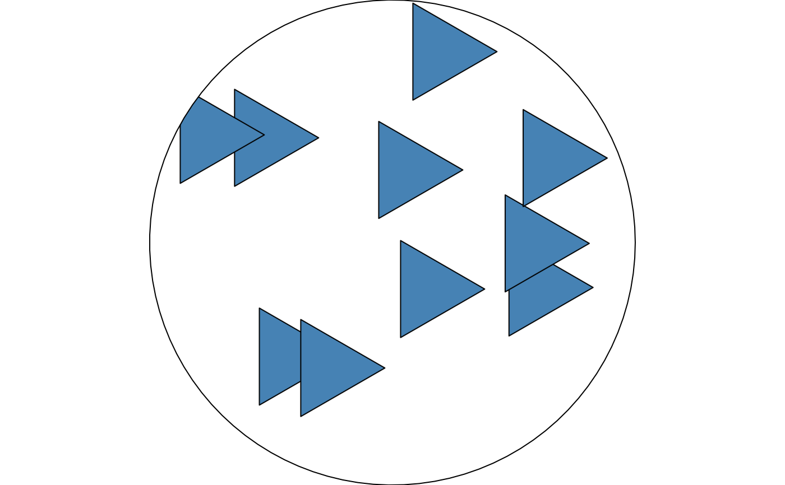
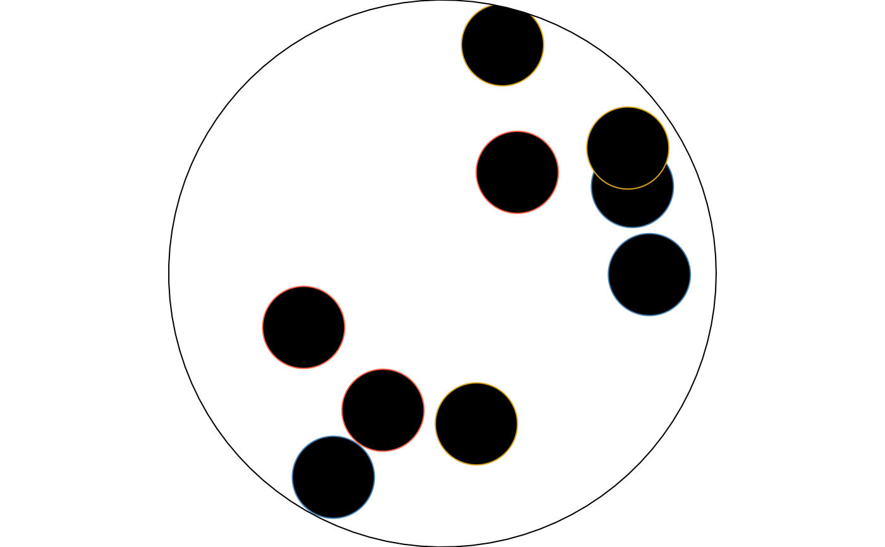

fill_scatter() generalizes fill_stipple(): instead of a fixed dot,
it scatters copies of an arbitrary small drawable – rendered with its
own style (colour, fill, linewidth), which may itself be another
fill_*() pattern – at random positions inside each tile, using
withr::with_seed() for reproducibility exactly as fill_stipple()
does.
Usage
fill_scatter(
unit = shape_circle(radius = 1),
n = 6L,
size = 0.2,
color = NULL,
spacing = 1,
aspect = NULL,
seed = 1L,
extend = "repeat"
)Arguments
- unit
A small drawable to scatter copies of. Default
shape_circle(radius = 1).- n
Number of copies scattered per tile. Must be a positive integer. Default
6L.- size
unit's rescaled size, as a"npc"fraction of the tile. Must be a number strictly between0and1. Default0.2.- color
NULL, or one or more colours overridingunit@style@colorfor each stamp, recycled (in order, not randomly) across thencopies.NULL(the default) colours every stamp fromunit's own style, as before this argument existed.- spacing
Tile size, as a fraction of the target's bounding box. Must be a positive number. Default
1(one tile spans the whole shape, sincespacing < 1risks the tiling distortion described above).- aspect
Width-to-height ratio of the target polygon's bounding box. Must be a positive number, or
NULL(the default) to resolve it automatically atdraw()time – seefill_hatch()'s ownaspectdocs.- seed
Integer seed for the scatter positions. Default
1L.- extend
Passed to
grid::pattern(). Default"repeat".
Value
A pattern object as returned by grid::pattern(), suitable for
use as the fill argument to grid::gpar().
Details
unit's own points are rescaled (preserving its own aspect ratio) to a
bounding box of size size and re-centred at each scattered position;
its absolute coordinates, position, and radius/width/etc. don't matter,
only its shape.
This needed two corrections neither fill_stipple()'s circles nor
fill_gradient()'s/fill_checker()'s rectangles did:
Every other
fill_*()helper's tile-squaring correction (height = spacing * aspect, keeping the tile physically square) was, by itself, enough to keep circular/rectangular content correctly proportioned. Arbitrary polygon content does not get the same treatment: empirically, agrid::polygonGrob()(orgrid::pathGrob()) used as pattern content renders as though it inherits the target's own, uncorrected bounding-box distortion directly, regardless of the tile-squaring correction applied around it – confirmed by testing a hand-built circular polygon side by side with an equivalentgrid::circleGrob()in the same corrected tile: the circle stayed circular, the polygon became an ellipse. Sofill_scatter()applies a second, explicit correction directly tounit's own vertex x-coordinates (dividing byaspect) on top of the usual tile-squaring.Repeated (tiled) polygon content can render with visible clipping artifacts on Cairo devices – confirmed interactively: a single stamp, comfortably inside its tile's margins, rendered as a clean shape when the tile spans the whole target (
spacing = 1, soextend = "repeat"is present but never actually exercised within the visible, clipped area) but as a "bitten" partial shape oncespacing < 1made the device actually tile multiple copies. This matchesgrid::pattern()'s own documented warning that "on Cairo devices, use of clipping in the pattern definition should be avoided because it is very likely to result in distortion of the pattern tile." Circles/rectangles/rasters didn't show this in the rest of the family, but arbitrary polygon geometry did.spacingtherefore defaults to1here (one tile spans the whole shape, scattering allncopies across it at once) rather than the smaller, densely-tiled defaults used elsewhere; settingspacing < 1is still possible for a repeating scattered motif, but may show this distortion. (Later testing onfill_stipple()found the same actually-repeated tile with multiple shapes combination distorts circleGrob content too, not just polygons – see its "Known rendering risk" section. A single tile with multiple shapes, as used by this function's default, was never observed to have the problem; only real repetition,spacing < 1, was.)
Examples
draw(shape_circle(
fill = fill_scatter(unit = shape_circle(radius = 1), n = 8L, size = 0.15)
))
# any small drawable works as the scattered unit, e.g. a triangle
draw(shape_circle(
fill = fill_scatter(
unit = shape_polygon(n = 3, fill = "steelblue"),
n = 10L,
size = 0.2
)
))

# a color vector overrides unit's own style colour, recycled per stamp
draw(shape_circle(
fill = fill_scatter(
color = c("steelblue", "tomato", "goldenrod"),
n = 9L,
size = 0.15
)
))
